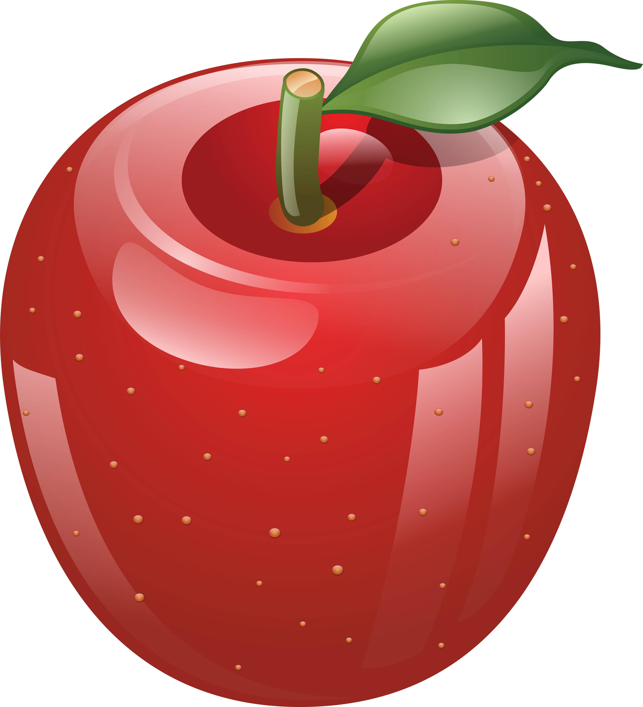
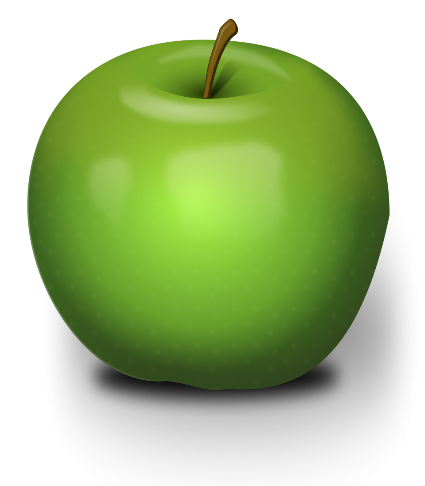

Gala
Gala is a clonally propagated apple cultivar with a mild and sweet flavor. In 2018, it surpassed Red Delicious as the apple cultivar with the highest production in the United States, according to the US Apple Association.

Granny Smith
The Granny Smith is a tip-bearing apple cultivar, which originated in Australia in 1868. It is named after Maria Ann Smith, who propagated the cultivar from a chance seedling.

Honeycrisp
Honeycrisp is an apple cultivar developed at the Minnesota Agricultural Experiment Station's Horticultural Research Center at the University of Minnesota,Twin Cities.